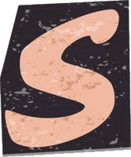
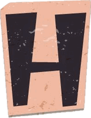
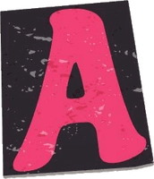
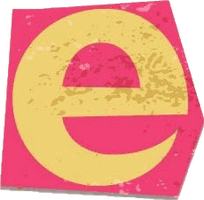
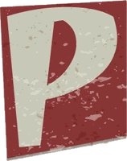
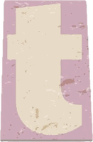

Bhavan's Tripura Vidya Mandir · CBSE · Tripura
- Scored 94.2% in the CBSE Secondary School Certificate examination.
- Built a strong base in mathematics and core sciences.
- Wrote first lines of code and got hooked on practical problem solving.






Computer Science (AI/ML) student at VIT-AP and research intern at NFSU. I build practical systems — federated learning, on-device computer vision, healthcare apps, and protocol tooling — with clean engineering, test coverage, and strong data-driven thinking.
Bhavan's Tripura Vidya Mandir · CBSE · Tripura
Bhavan's Tripura Vidya Mandir · CBSE · Tripura
VIT-AP University, Andhra Pradesh
NFSU · School of Cybersecurity & Digital Forensics · Tripura